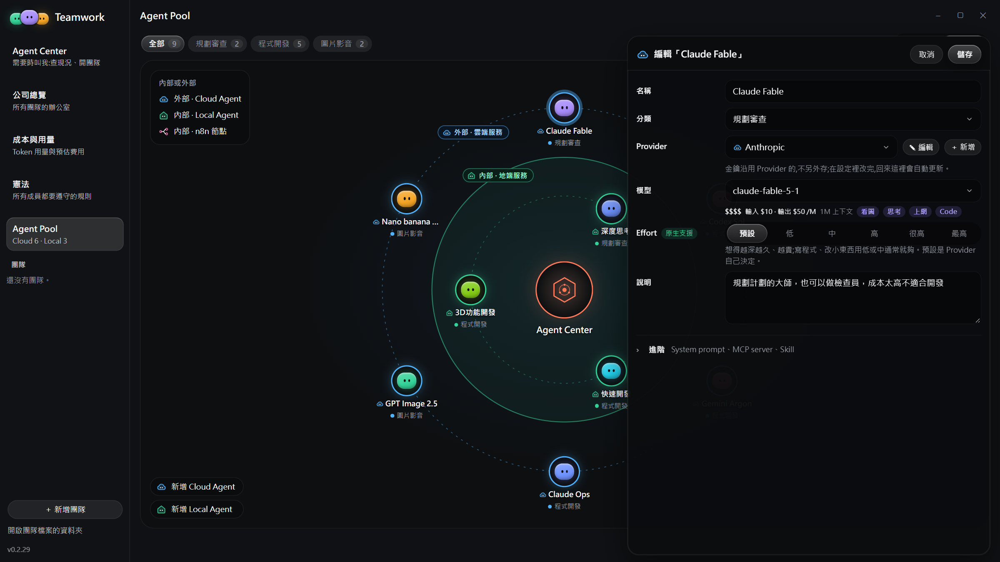
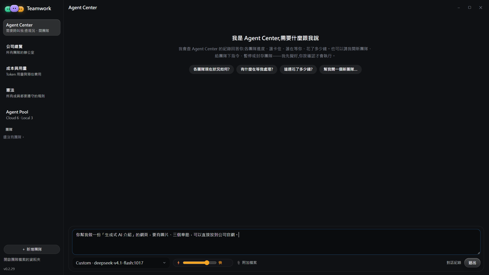
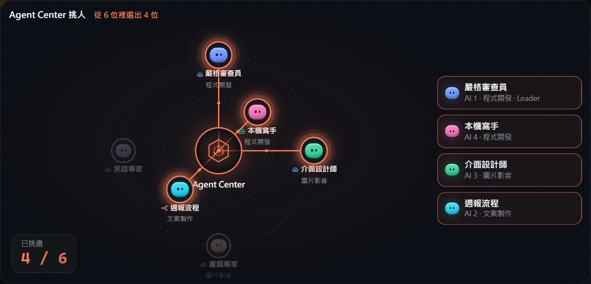
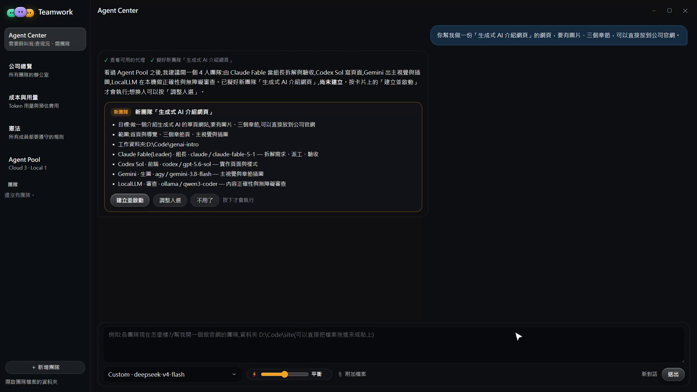
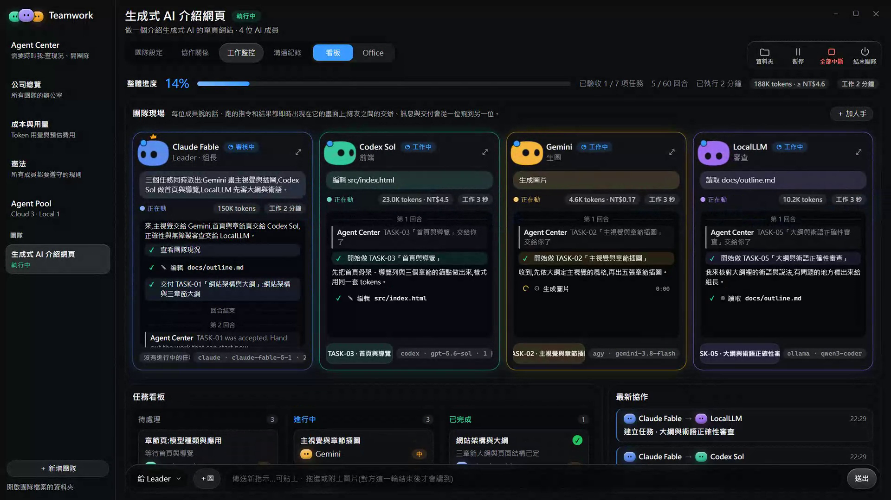
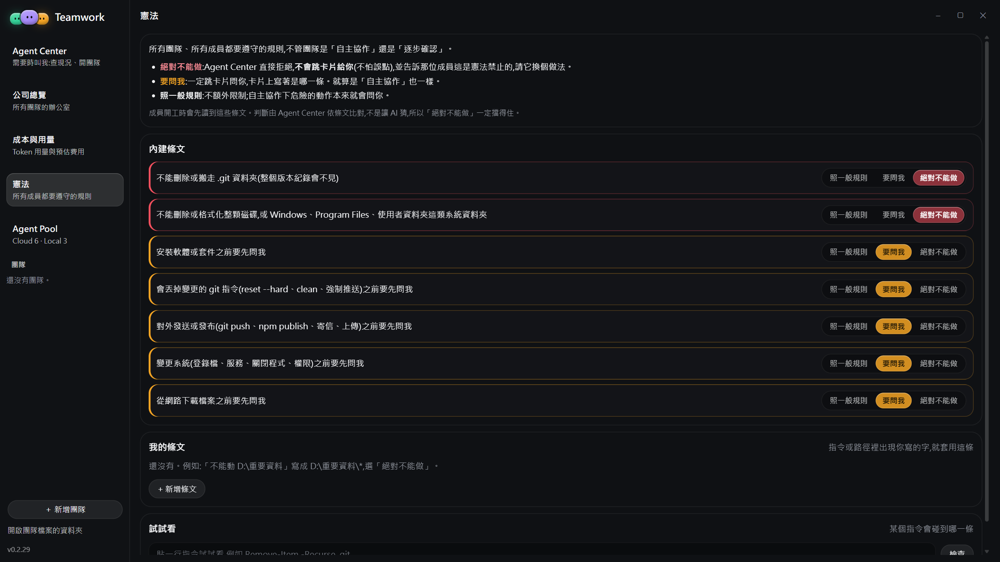
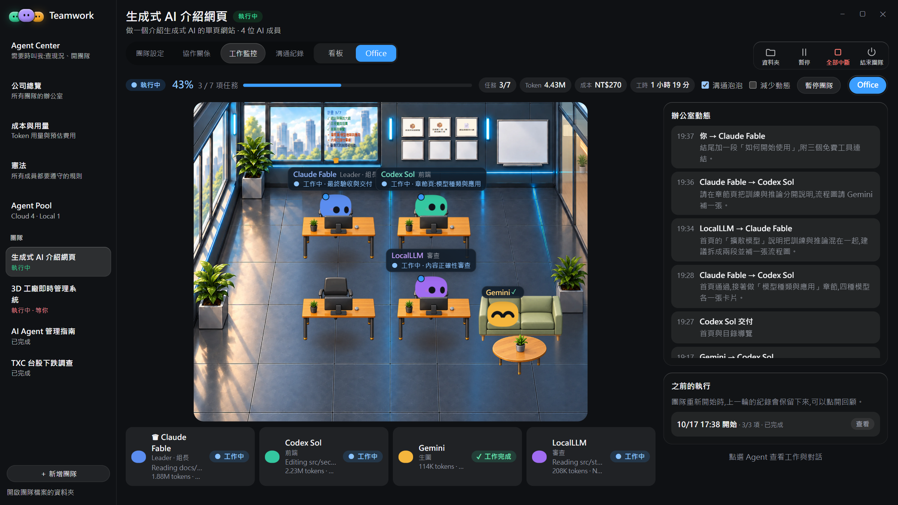
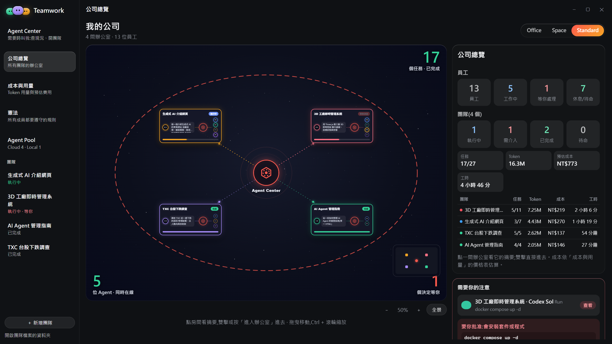
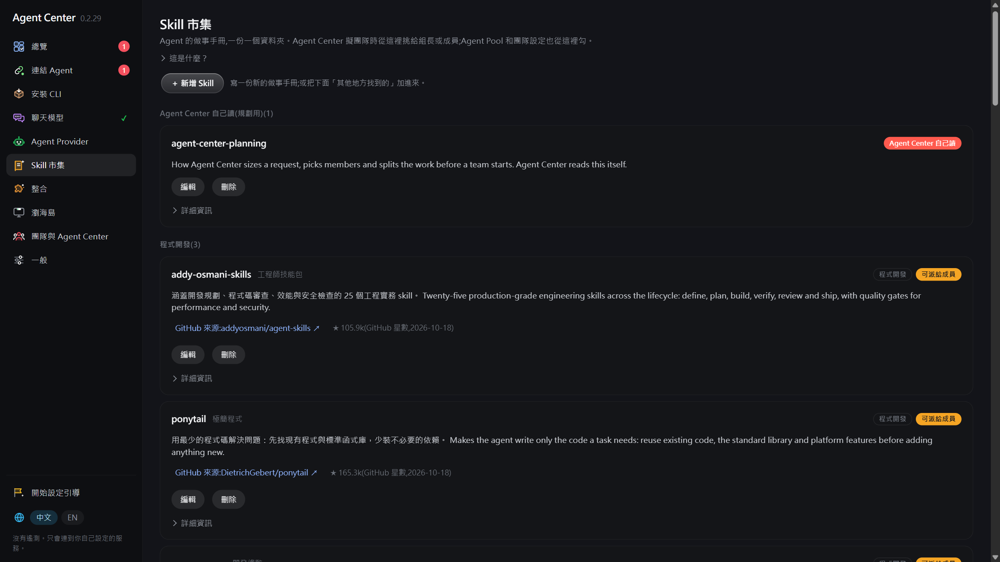
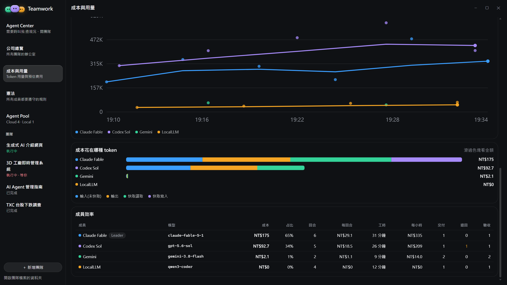

Agent Team
把內外部 AI Agent
組成團隊
像管理一間公司一樣，管理你的 Agent
01 為什麼需要
AI Agent 越多，越需要一個「組隊與管理」的地方
一個人手上同時有 Claude Code、Codex、Gemini、公司內部的 LocalLLM、還有 n8n 流程。每一個都很強，但各自為政。
Agent 散落各處
雲端服務、地端模型、自動化流程各有入口與金鑰，沒有統一名冊，也分不清誰能做什麼。
一件事需要多種專長
寫網頁要企劃、設計、前端、審查；做系統要 3D、後端、UI/UX、測試。單一 agent 做不好，人工串接又慢。
進度與花費看不見
各 agent 各自回報 token，模型單價不同，到底花了多少、誰花的、花在哪，事後才知道。
自動化不等於失控
團隊跑起來後，人需要能加人、改任務、下指示、按暫停，而不是只能等結果。
點圖看這些問題長什麼樣
Agent 散落各處。Claude Code、Codex、Gemini 各有自己的登入與金鑰，公司內部的 LocalLLM 在另一台機器上，n8n 流程又在瀏覽器裡。要用誰，就得去那個入口。
沒有一份名冊寫著「我們有哪些 Agent、各自擅長什麼、一次多少錢」；新人問起來，答案在每個人腦子裡。
一件事需要多種專長。做一個網頁要企劃、設計、前端、審查；做一套系統要 3D、後端、UI/UX、測試。單一 agent 什麼都做，結果就是每一段都普通。
於是人站在中間：把 A 的輸出貼給 B，再把 B 的結果拿給 C 審，來回搬運。慢，而且錯都出在交接。
進度與花費看不見。每個 agent 用自己的方式回報 token（有的連報都不報），模型單價又不一樣，沒人能即時說出「這個案子到現在花了多少、誰花最多、花在哪」。
進度也一樣：誰做完了、誰卡住、誰在等人，要一個一個視窗去翻。
自動化不等於失控。流程一跑起來，人就在迴圈外面：想加一個需求、換一個人、先停一下，都沒有地方下手，只能等它跑完再看結果。
更怕的是它要裝套件、刪檔案、對外送東西時，沒有人在那一刻說「等等」。
真正的工作需要好幾種專長一起做，而且做的時候人要看得到、能插手。
02 整體架構
五個環節，從「接進 Agent」到「人介入」
管理內外部 Agent
Cloud Agent、Local Agent、n8n 節點。
依需求建立 Agent
指定模型、分類、Effort、Skill。
自動判斷怎麼組隊
Harness + Skill 決定規模與分工。
團隊執行、即時看板
任務、交付、token、費用、工時。
人隨時介入
加人、改任務、下指示、暫停。
點畫面看每個環節
第 1 環：Agent Provider。把 Cloud Agent、Local Agent、n8n 節點接進同一個名冊，握手時自動偵測模型、能力與價位，金鑰集中保管。
第 2 環：Agent Pool。依需求建立不同專長的 Agent：指定模型、分類、Effort、Skill，建立時就看到單價。這是 Agent Center 挑人的來源。
第 3 環：Agent Center。讀自己的規劃 Skill（Harness）判斷 Quick / Medium / Large，挑人、分工、指定審查者，提出方案卡；人確認後開工。
第 4 環：Agent Team。團隊執行時，看板與 Office 即時顯示任務、交付、每位成員的回合、token、費用、工時；所有事件寫在本機的 events.jsonl，中斷後可從原處繼續。
第 5 環：Human in the loop。核准危險操作、回答成員提問、加人、改任務、下指示、暫停、結束團隊；成本與時間有上限。
資料都留在本機：團隊事件寫成 events.jsonl，金鑰存在 Windows 認證管理員，前端永遠看不到。
03 Agent Provider
內部或外部，自由新增
Cloud Agent
外部雲端服務：Claude Code、Codex、Antigravity 等 coding CLI，或任何 OpenAI 相容端點。
Local Agent
公司自己的模型端點或本機模型，工作與資料留在內網。
n8n 節點
既有的自動化流程包成一個成員，由 Webhook 收任務、回結果。
金鑰集中保管
存在 Windows 認證管理員，改一次全部更新。
03 Agent Pool
依需求建立不同專長的 Agent
分類
規劃審查、程式開發、UI/UX 設計、文件簡報、文案、研究、圖片影音、工具自動化。
能力
看圖、思考、生圖、上網、Code，由 Provider 握手時自動偵測，也可以手動調整。
Effort 與 Skill
每個 Agent 可設思考深度與帶著開工的 Skill。
03 建立 Agent
選模型時就看到單價與價位

價格怎麼來
自訂價目 › 代理端點回報 › 公開價目表（LiteLLM），依序取用。
別名自動對應
opus、fable、sonnet 自動對到完整模型；價目表沒有的版本先用同系列最新價格並標示「≈」。
沒有價格會提醒
找不到價格的模型顯示「無價格」，避免事後算不出費用。
04 Agent Center
一句話，組好一個團隊




05 團隊看板
任務、交付、token、費用、工時，即時顯示
進度
任務狀態與已驗收數量，最新協作訊息即時捲動。
每位成員
回合數、失敗回合、token、依價目表算出的費用、累計工作時間。
整隊合計
看板標題列彙總全隊 token、費用與工時；多人同時工作時，工時會比已執行時間長。費用依你設定的幣別顯示。
05 Human in the loop
團隊跑的時候，人隨時可以插手
05 憲法
所有成員都要遵守的規則

一處管理
規則寫一次，所有團隊、所有成員都適用，不必每個 Agent 各寫一份。
人訂的底線
什麼不能做、什麼要先問人、交付要長什麼樣，由人決定，Agent 照做。
與 Skill 分工
憲法是底線，Skill 是方法：前者所有人共用，後者依專長派發。
05 Office 檢視
把團隊看成一間辦公室

06 同時組多個團隊
Standard：一眼看到所有 Agent Team 的概況

多團隊並行
可以同時跑多個團隊，各自有看板、各自記帳。
總覽數字
員工（Agent）總數、工作中、等你處理、休息待命、各隊預估成本與合計工時。
進出
點一間看摘要，雙擊進入那個團隊的看板。
07 Skill
Skill 讓 Agent 帶著方法開工

給成員用的
派給組長或成員，開工時把全文帶進它的腦袋：superpowers、ui-ux-pro-max、pptx、marketing-skills……
Agent Center 自己讀的
標 for: agent-center，只影響它怎麼判斷規模、挑人、分工，不會派給成員。
自己寫
一份 SKILL.md 放進資料夾就是一個 Skill。
08 成本控管
每一顆 token 都知道是誰、用哪個模型、花了多少

自動計價
成員回報用量，平台依價目表計價，換算成你設定的幣別。
上限與警示
每位成員可設 token 上限與金額上限；團隊可設時間上限。到上限成員會停、團隊會提醒收尾。
診斷與建議
分析頁上方會指出成本集中在誰、快取命中率、退回次數與每小時成本；也可以請 Agent Center 讀用量紀錄，說明錢花在哪。
09 小結
一個平台，四件事
- 管理 內部、外部、n8n 三種 Agent 進同一個名冊，金鑰集中保管，能力與價位一目了然。
- 建立 在 Agent Pool 依需求建立不同專長的 Agent，指定模型、Effort、Skill。
- 組隊 Agent Center 依 Harness 與 Skill 判斷規模、挑人、分工，一句話就能開工；可同時跑多個團隊。
- 掌控 進度、交付、token、費用、工時即時可見；人隨時加人、改任務、下指示、暫停；成本有上限。
AI Agent 越多，越需要一個組隊與管理的地方。
一頁投影片一頁 PDF。按下後在列印視窗選「另存為 PDF」，其他設定維持預設即可。